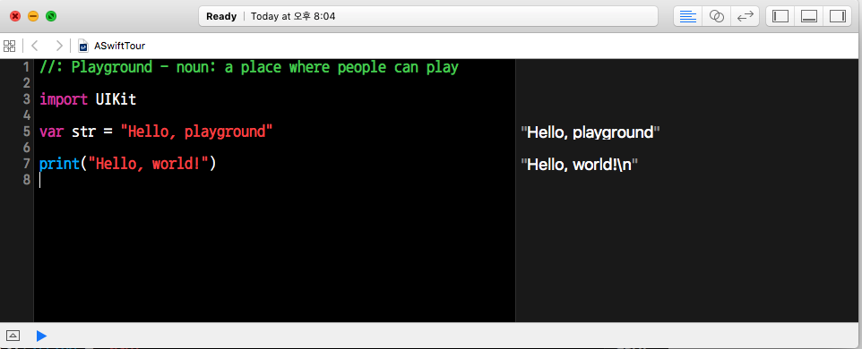

The swift Programming Language(Swift 2.1)

print("Hello, world!")
while, do-while
var n = 2
while n < 100 {
n = n * 2
}
print(n)
var m = 2
repeat {
m = m * 2
} while m < 100
print(m)
for range
var firstForLoop = 0
for i in 0..<4 {
firstForLoop += i
}
print(firstForLoop)
var secondForLoop = 0
for var i = 0; i < 4; ++i {
secondForLoop += i
}
print(secondForLoop)